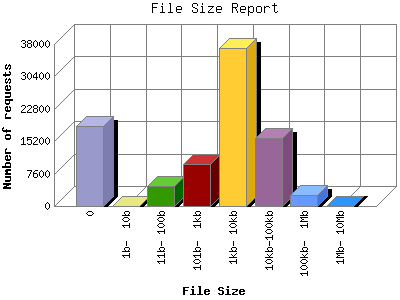

The File Size Report categorizes the size of the file being requested. This can be useful in optimizing site performance. (Remember that on a 28.8Kps modem, it will take on average of 40 seconds to download 100Kb of data.)

| File Size | Number of requests | Percentage of the bytes | |
|---|---|---|---|
| 1. | 0 | 18,698 | 0% |
| 2. | 1b- 10b | 3 | 0% |
| 3. | 11b- 100b | 4,738 | 0.3% |
| 4. | 101b- 1kb | 9,752 | 0.40% |
| 5. | 1kb- 10kb | 37,177 | 12.1% |
| 6. | 10kb-100kb | 15,992 | 38.97% |
| 7. | 100kb- 1Mb | 2,555 | 43.70% |
| 8. | 1Mb- 10Mb | 21 | 4.90% |
This report was generated on April 3, 2004 00:36.
Report time frame December 11, 2003 00:13 to April 2, 2004 23:56.
| Web statistics report produced by: | |
| analog 5.1 | Report Magic for Analog 2.10 |